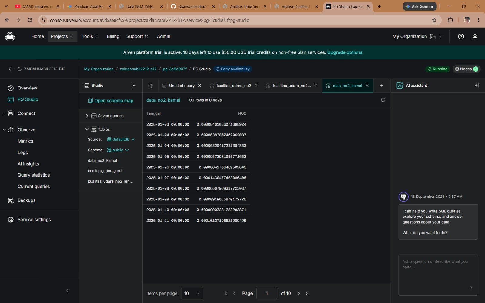
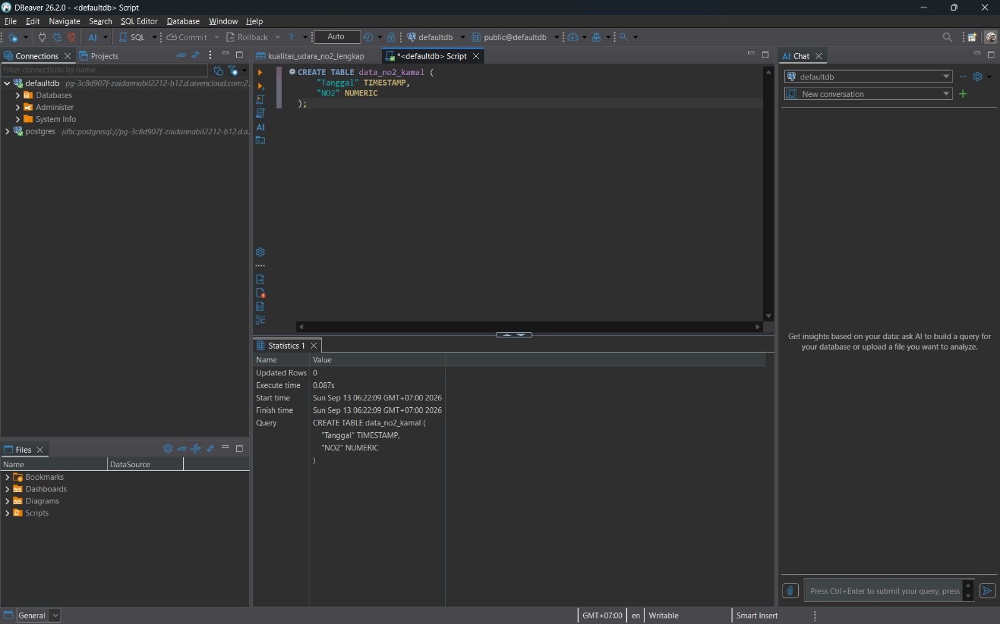
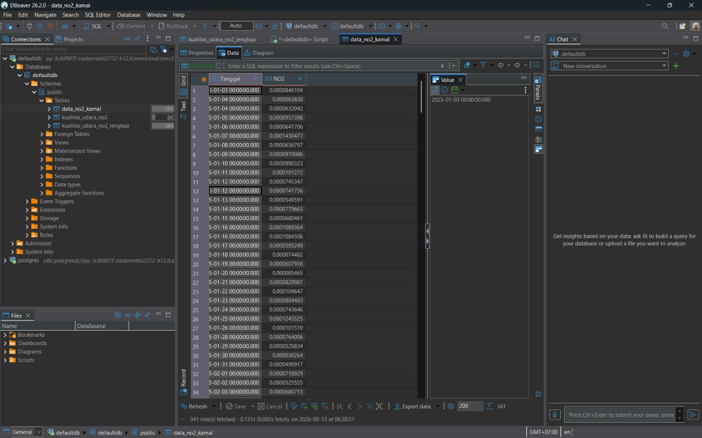
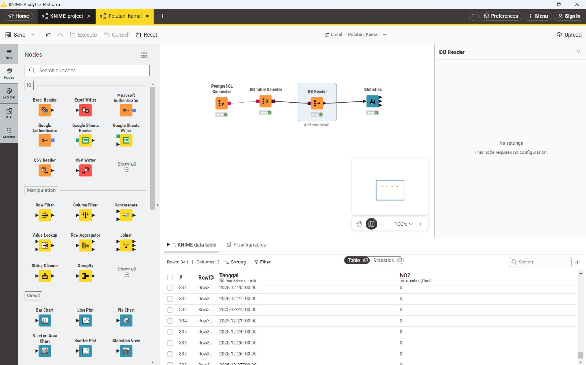
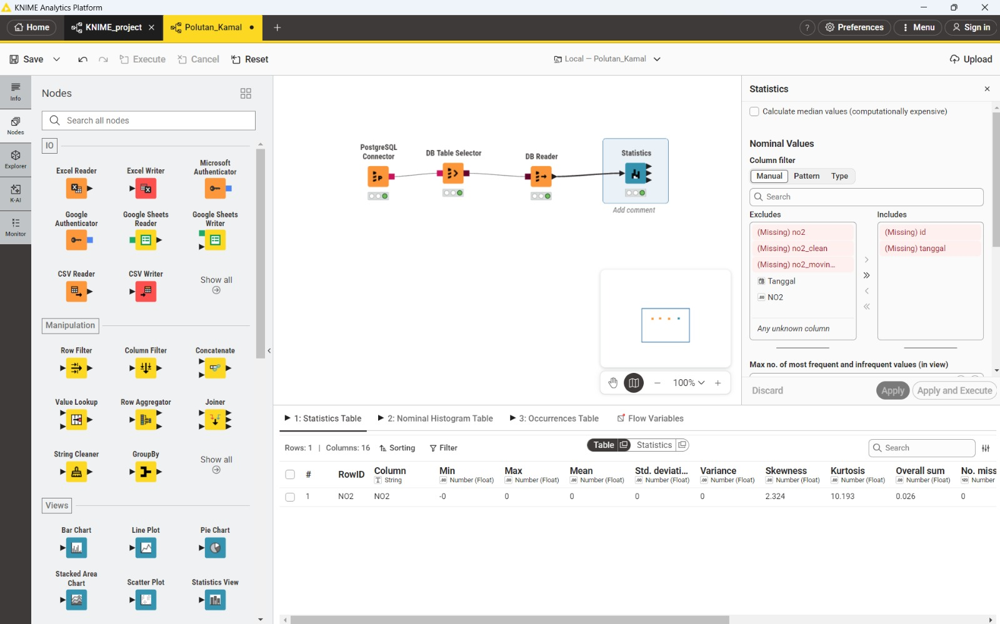

Bab 2: Sentralisasi Data, Manajemen Database, dan Analisis Statistik Deskriptif#
2.1 Pendahuluan#
Pada Bab 1, kita telah berhasil melalui tahapan preprocessing data konsentrasi NO2 di Kecamatan Kamal — mulai dari deteksi outlier menggunakan metode IQR, imputasi nilai hilang melalui interpolasi waktu, hingga ekstraksi 68 fitur deret waktu menggunakan TSFEL. Hasil dari seluruh proses tersebut adalah sebuah dataset yang bersih, konsisten, dan siap digunakan untuk tahap analisis lebih lanjut.
Namun, menyimpan data hasil olahan hanya dalam bentuk berkas lokal (seperti .csv) memiliki keterbatasan, terutama dari sisi aksesibilitas dan skalabilitas ketika data perlu diakses oleh berbagai alat analitik secara bersamaan. Oleh karena itu, pada Bab 2 ini, fokus pembahasan bergeser dari data preparation di sisi Python menuju sentralisasi data menggunakan cloud database, agar proses analitik ke depannya dapat dilakukan secara lebih terpusat, aman, dan efisien. Setelah data tersentralisasi, tahap berikutnya adalah menariknya kembali untuk dieksplorasi secara statistik menggunakan KNIME Analytics Platform, sebuah platform no-code/low-code yang banyak digunakan dalam alur kerja analisis data.
Secara garis besar, alur kerja pada bab ini terbagi menjadi tiga tahapan utama:
Menyimpan data ke dalam server cloud database (Aiven PostgreSQL).
Mengelola struktur tabel dan mengimpor data melalui tool DBeaver.
Menarik data dari cloud dan melakukan analisis statistik deskriptif di KNIME.
2.2 Sentralisasi Data dengan Aiven PostgreSQL#
Untuk kebutuhan penyimpanan data secara terpusat, digunakan layanan Aiven, sebuah platform Database-as-a-Service (DBaaS) yang menyediakan instans PostgreSQL terkelola di cloud. Pemilihan Aiven didasarkan pada kemudahan provisioning server, dukungan koneksi aman secara default, serta antarmuka dashboard yang memudahkan pemantauan data tanpa perlu mengelola infrastruktur server secara manual.
Setelah instans database berhasil dibuat, Aiven menyediakan fitur PG Studio, yaitu antarmuka berbasis web bawaan yang memungkinkan kita menjalankan kueri dan memverifikasi isi tabel langsung dari dashboard, tanpa perlu tool tambahan. Fitur inilah yang digunakan untuk melakukan pengecekan awal, memastikan koneksi ke server cloud berjalan normal dan siap menerima data.
Verifikasi Data di Dashboard Aiven

2.3 Manajemen Database via DBeaver#
Setelah server database cloud siap, langkah selanjutnya adalah membangun struktur tabel dan mengisi data ke dalamnya. Untuk keperluan ini, digunakan DBeaver, sebuah aplikasi database management tool yang mendukung koneksi ke berbagai jenis database, termasuk PostgreSQL.
2.3.1 Menghubungkan DBeaver ke Aiven#
Koneksi antara DBeaver dan server Aiven dikonfigurasi menggunakan kredensial (host, port, username, password) yang disediakan oleh dashboard Aiven. Satu hal yang bersifat wajib dalam konfigurasi ini adalah pengaturan parameter koneksi:
sslmode=require
Parameter ini memastikan bahwa seluruh komunikasi antara client (DBeaver) dan server database dienkripsi menggunakan SSL/TLS. Tanpa pengaturan ini, sebagian besar layanan cloud database — termasuk Aiven — akan menolak permintaan koneksi demi menjaga keamanan data yang berpindah melalui jaringan publik.
2.3.2 Pembuatan Tabel#
Setelah koneksi berhasil terjalin, langkah berikutnya adalah membuat wadah tabel yang akan menampung data hasil preprocessing dari Bab 1. Struktur tabel dirancang agar sesuai dengan format data yang telah dihasilkan sebelumnya, yaitu kolom Tanggal bertipe TIMESTAMP dan kolom NO2 bertipe NUMERIC agar presisi desimal tetap terjaga.
CREATE TABLE data_no2_kamal (
"Tanggal" TIMESTAMP,
"NO2" NUMERIC
);
Perintah SQL di atas dieksekusi langsung melalui SQL Editor pada DBeaver yang telah terhubung ke server Aiven.
Eksekusi Perintah SQL

2.3.3 Impor Data ke dalam Tabel#
Setelah tabel data_no2_kamal berhasil dibuat, tahap selanjutnya adalah mengimpor berkas hasil ekstraksi fitur dari Bab 1 (.csv) ke dalam tabel tersebut menggunakan fitur import bawaan DBeaver. Proses ini memetakan setiap kolom pada berkas CSV ke kolom yang bersesuaian pada tabel, sehingga seluruh baris data dapat masuk dengan struktur yang konsisten.
Tabel Setelah Diisi Data

2.4 Analisis Statistik dengan KNIME Analytics Platform#
Dengan data yang telah tersentralisasi di Aiven PostgreSQL, tahap berikutnya adalah menariknya kembali untuk dieksplorasi secara statistik menggunakan KNIME Analytics Platform. KNIME dipilih karena pendekatan workflow-nya yang berbasis node, sehingga setiap tahapan proses — mulai dari koneksi database hingga perhitungan statistik — dapat divisualisasikan secara jelas sebagai alur kerja yang runtut.
2.4.1 Alur Node#
Untuk menarik data dari cloud database ke dalam KNIME, digunakan rangkaian empat node berikut secara berurutan:
PostgreSQL Connector — membangun koneksi ke server Aiven PostgreSQL.
DB Table Selector — memilih tabel target, yaitu
data_no2_kamal.DB Reader — mengeksekusi pembacaan data dari tabel terpilih ke dalam workflow KNIME.
Statistics — menghitung ringkasan statistik deskriptif dari data yang telah dibaca.
Hasil DB Reader

Salah satu hal menarik yang teramati pada node DB Reader adalah tampilan nilai NO2 yang desimalnya sangat kecil (misalnya 0.00008...). Pada tampilan tabel di KNIME, nilai semacam ini seringkali terlihat dibulatkan secara otomatis menjadi 0. Fenomena ini murni bersifat kosmetik pada level tampilan — KNIME secara default membatasi jumlah digit desimal yang ditampilkan pada tabel agar lebar kolom tetap ringkas dan mudah dibaca. Penting untuk digarisbawahi bahwa data asli tidak hilang maupun berubah; nilai presisi penuh tetap tersimpan secara utuh di belakang layar dan akan tetap digunakan pada setiap perhitungan berikutnya.
2.4.2 Verifikasi melalui Node Statistics#
Bukti bahwa data presisi tinggi tersebut tetap diproses secara utuh dapat dilihat pada keluaran node Statistics. Node ini menghitung berbagai ukuran statistik deskriptif seperti Mean, Standard Deviation, Skewness, dan Kurtosis dari kolom NO2.
Ringkasan Statistik Deskriptif

Nilai-nilai Mean, Skewness, dan Kurtosis yang dihasilkan pada node ini menunjukkan hasil dengan presisi tinggi hingga banyak digit di belakang koma. Hal ini membuktikan bahwa meskipun tampilan pada node DB Reader terlihat membulatkan angka desimal kecil menjadi 0, mesin komputasi di balik layar tetap mengolah nilai numerik tersebut secara utuh dan akurat, sehingga hasil analisis statistik yang diperoleh tetap dapat diandalkan.
2.5 Kesimpulan#
Bab ini menutup rangkaian alur kerja integrasi data yang dimulai dari persiapan dan ekstraksi fitur di Python pada Bab 1, dilanjutkan dengan sentralisasi data ke Aiven PostgreSQL, pengelolaan struktur dan pengisian data melalui DBeaver dengan koneksi yang diamankan lewat sslmode=require, hingga akhirnya dieksplorasi secara statistik menggunakan KNIME Analytics Platform. Keberhasilan integrasi lintas tool ini membuktikan bahwa data hasil olahan tidak hanya bersih secara struktur, tetapi juga tetap terjaga presisinya di sepanjang alur — dari file lokal, tersimpan di cloud, hingga siap dianalisis lebih lanjut pada tahap pemodelan berikutnya.